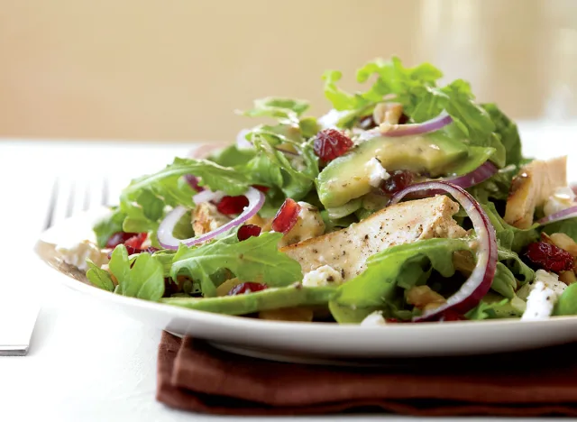

Grilled Chicken Avocado Salad
by David Zinczenko and Matt Goulding

Description
You won't ever have to worry about not feeling full after eating
this superfood-packed salad.
Ingredients
- 12 oz cooked chicken
- 12 cups arugula (1 prewashed bag)
- 1/4 cup dried cranberries
- 1 avocado, pitted, peeled, and sliced
- 1/4 cup crumbled goat cheese
- 1/4 cup walnuts, roughly chopped
- 1/4 cup honey mustard vinaigrette
- Salt and black pepper to taste
Steps
-
Combine the chicken, arugula, cranberries, avocado, goat
cheese, walnuts, vinaigrette, salt, and pepper in a large
bowl, using your hands or 2 forks to fully incorporate the
dressing.
Extra: how to pit an avocado:
- Work the blade carefully around the pit.
- Thwack the pit with blade; twist and carefully remove.
- Slice or dice, then spoon out the soft flesh.